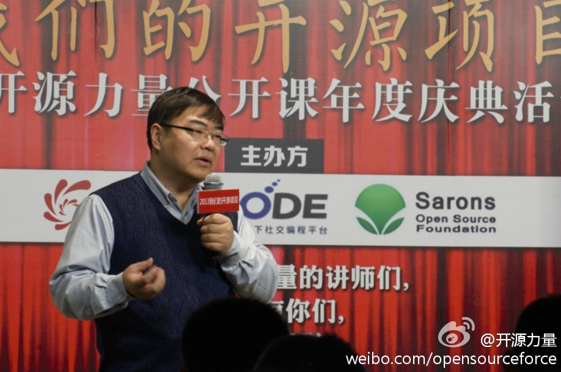
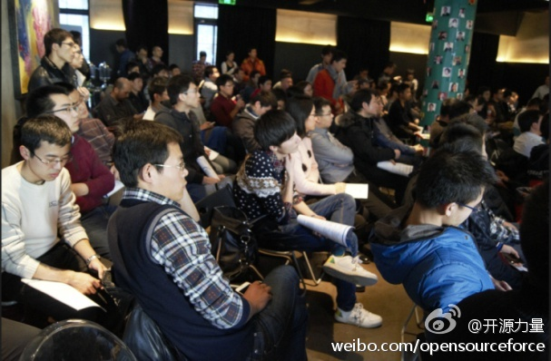
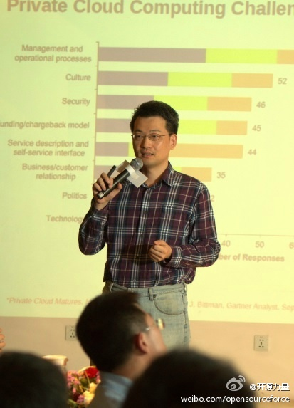
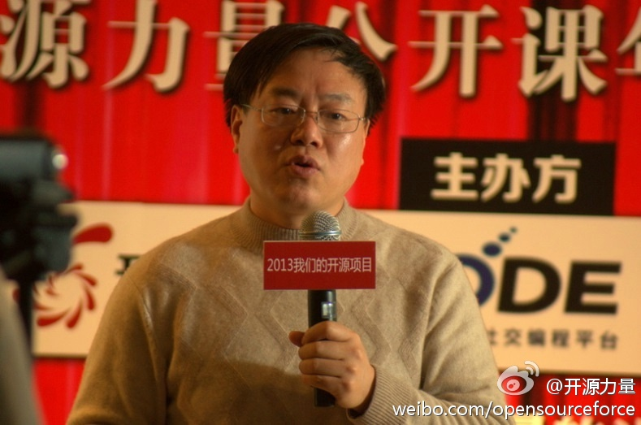
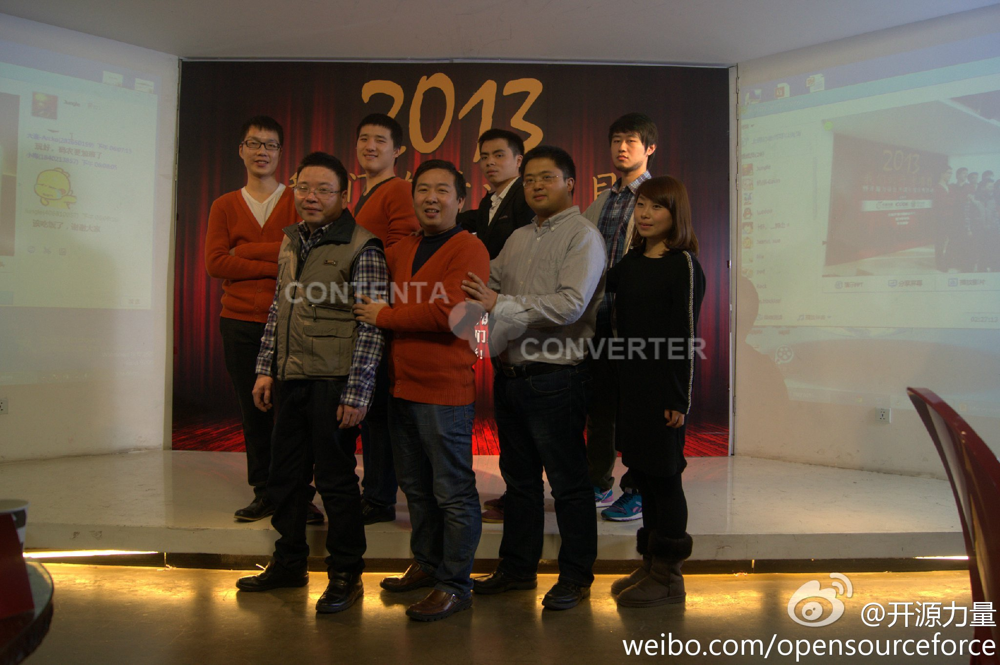

//@我叫书婷: 一起见证开源的力量 @CSDN李涛 @CSDN魏兵 @郭理靖 @Ada李力 @Addis_Wang @ASTA谢 @安卓巴士开发者 @Bardo @Born白清杰 @韩宪平 @红帽中国 @男士下午茶 @孟迎霞 @CSDN研发频道 @爱开源的贡献开源社区@开源力量:见证#中国开源的力量#：12月29日下午，由开源力量、CSDN CODE和多个开源社区共同主办的“我们的开源项目暨开源力量公开课年度庆典”活动在3W咖啡举办，众多开源开发者和爱好者齐聚一堂，共同回顾2013年度中国的开源并展望未来-CSDN.NET 网页链接 